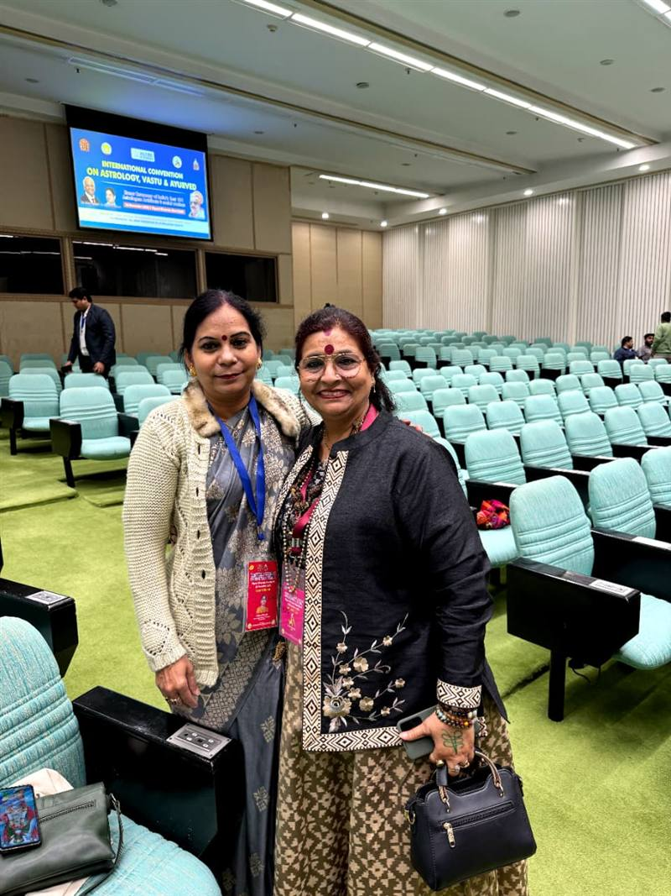
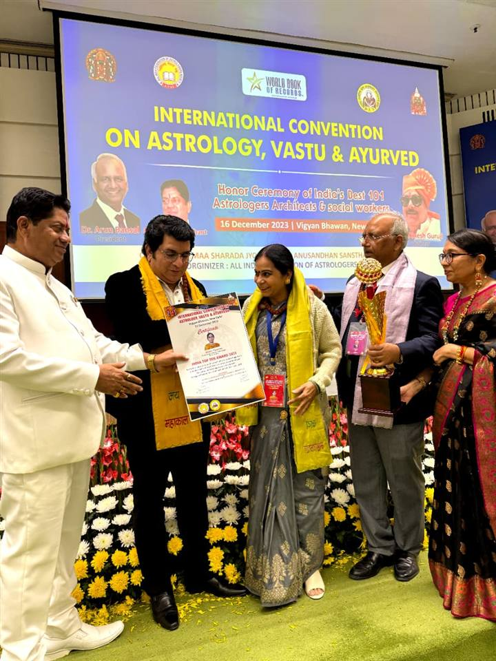
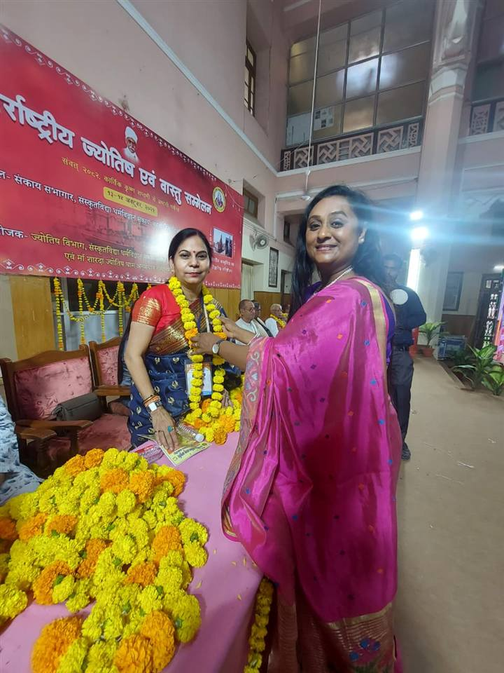
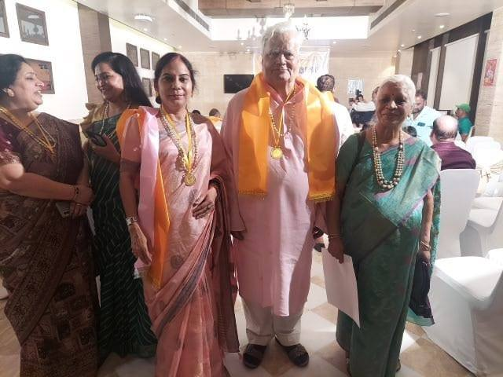

STEP 01
Choose a focus
Browse the consultation areas and note the questions you’d like to discuss.
Online and in-person consultations · Bhusawal, Maharashtra
Seemaa Pathak offers personal guidance across Vedic astrology, numerology, tarot, and spiritual healing. Sessions are available in Hindi and English.
Online sessions are available for clients beyond Bhusawal.

Consultations
Explore the available consultation areas and find the one that best fits your current questions.
Birth-chart guidance for career, relationships, and life decisions.
Explore compatibility, communication, and relationship questions.
Learn about numerology, Lal Kitab, and traditional remedies.
Explore tarot, palmistry, Akashic records, and PLR sessions.
Getting started
Start with the question you want to explore, then get in touch to discuss the right consultation.
Browse the consultation areas and note the questions you’d like to discuss.
Contact Seemaa to ask about the service, format, and available appointment times.
Choose an online or in-person session and the language that suits you.
About Seemaa
Based in Bhusawal, Maharashtra, Seemaa Pathak offers guidance in Vedic astrology and a range of spiritual practices. She works with clients in Hindi and English, both online and in person.
Learn more about her background, approach, and areas of expertise.
Read Seemaa’s storyRecognition
Visit the gallery for the complete collection.



Start a conversation
Get in touch to discuss the available services and session formats.
Contact Seemaa